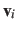
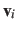

The block eigenvector {...} defines the projection of the coordinates
of a group of atoms (or more precisely, their deviations from the
reference coordinates) onto a vector in
 , where
, where  is the
number of atoms in the group. The computed quantity is the
total projection:
is the
number of atoms in the group. The computed quantity is the
total projection:
where, as in the rmsd component,  is the optimal rotation
matrix,
is the optimal rotation
matrix,
 and
and
 are the centers of
geometry of the current and reference positions respectively, and
 are the components of the vector for each atom.
Example choices for
are the centers of
geometry of the current and reference positions respectively, and
 are the components of the vector for each atom.
Example choices for
 are an eigenvector
of the covariance matrix (essential mode), or a normal
mode of the system. It is assumed that
are an eigenvector
of the covariance matrix (essential mode), or a normal
mode of the system. It is assumed that
 :
otherwise, the colvars module centers the
automatically when reading them from the configuration.
:
otherwise, the colvars module centers the
automatically when reading them from the configuration.
As for the component rmsd, the available options are atoms and refPositions.
In addition, the following are recognized:
This component returns a number (in Å), whose value ranges between
the smallest and largest absolute positions in the unit cell during
the simulations (see also distanceZ). Due to the
normalization in eq. 6, this range does not
depend on the number of atoms involved.
Jérôme Hénin
2015-03-03
 .
This allows to conveniently define a colvar
.
This allows to conveniently define a colvar